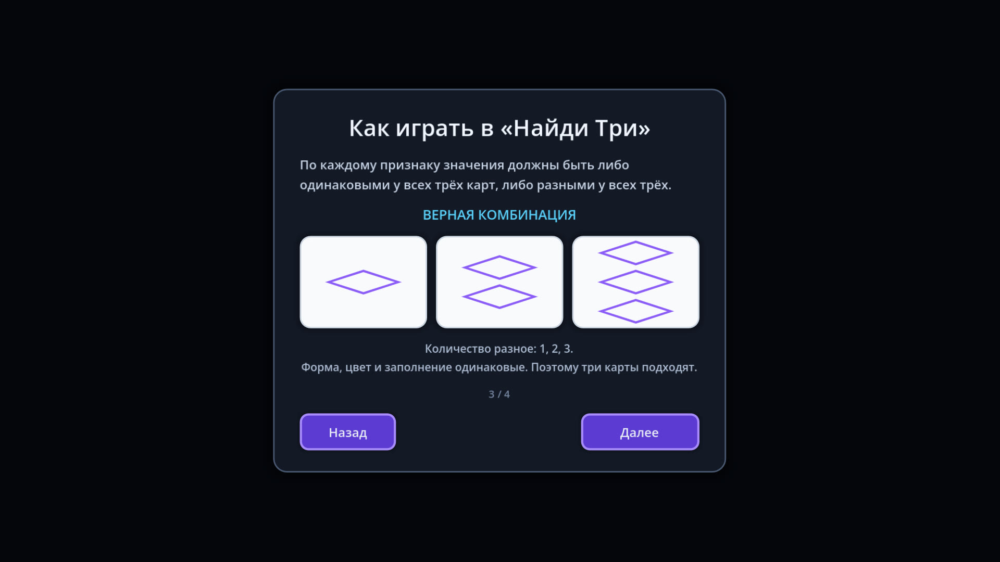
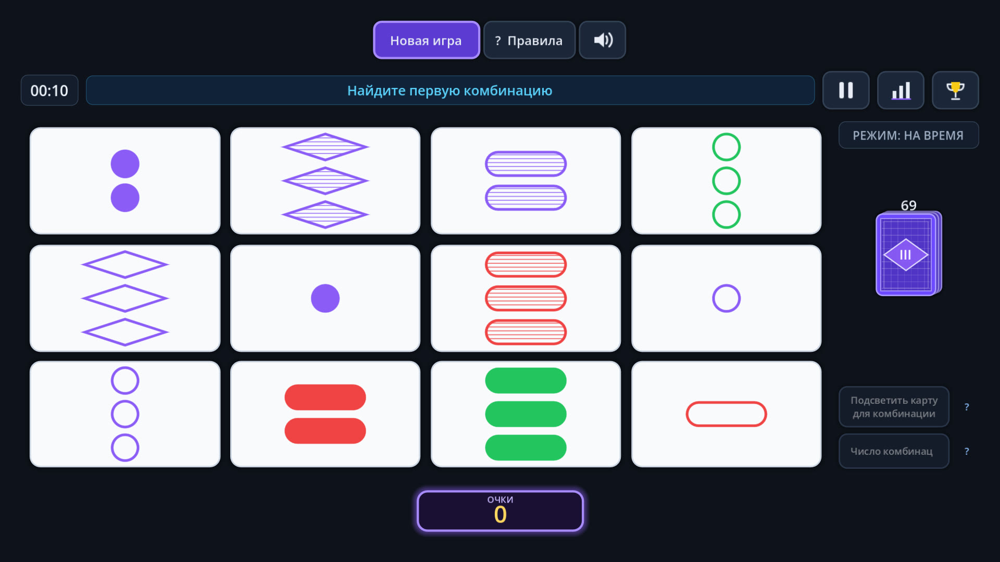

Найди Три
Логическая карточная игра на внимательность. На столе 12 карт — найдите тройку, в которой каждый признак одинаков у всех или различен у каждой.
Скачать в RuStore
Об игре
У каждой карты четыре признака: количество, форма, цвет и заливка. Каждый признак бывает одним из трёх вариантов. Тройка подходит, если по каждому признаку карты полностью совпадают или полностью различаются — промежуточных вариантов нет.
Играйте соло на время, против бота трёх уровней сложности или нажимайте «Нашёл!» раньше соперника. Подсказки можно получить за просмотр видео — только по желанию.
Как играть
- Смотрите на признаки. Сравнивайте количество, форму, цвет и заливку.
- Соберите тройку. По каждому признаку карты должны полностью совпадать или полностью различаться.
- Успейте первым. В режиме против бота сначала нажмите «Нашёл!», затем выбирайте карты.
Скриншоты



Реклама и данные
В игре показывается реклама Рекламной сети Яндекса: полноэкранная между партиями и видео за вознаграждение — только по желанию игрока, за подсказки.
Игровой прогресс хранится на устройстве. Какие данные обрабатывает рекламный SDK, описано в политике конфиденциальности.